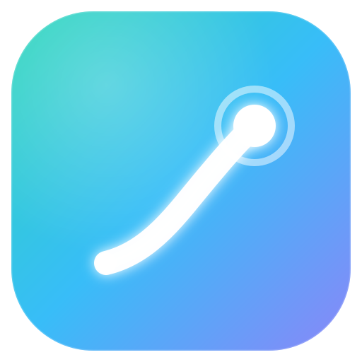
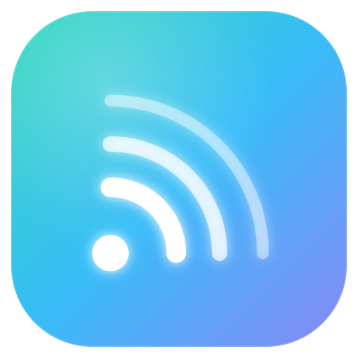
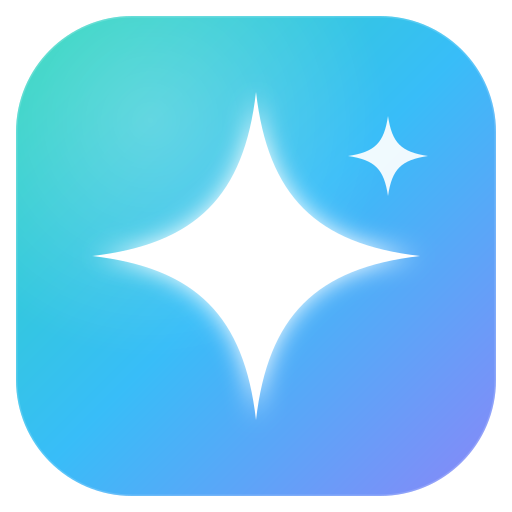
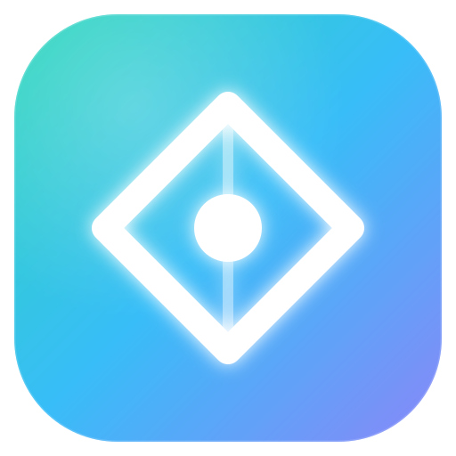

Nordic-Aurora (teal → sky → indigo) · vier Richtungen · je Tile / 28px / Light / 16px-Favicon / Mono-Linie

Trace Empfehlung
Aufsteigende Flugbahn, die in einem Beacon-Punkt endet — „rocketplane" (Trajektorie) trifft Trace/Latenz-Kurve. Am stärksten mit Name + Produkt verknüpft.
28 · dark
28 · light
16 · favicon
mono

Broadcast
Signal-Wellen, die von einem Knoten ausgehen — der Beacon, der Telemetrie sendet/empfängt. Sehr eindeutig „Observability", skaliert klein hervorragend.
28 · dark
28 · light
16 · favicon
mono

Beacon
Leitstern / Nordstern mit Funken — Orientierung und Insight. Premium und einprägsam; nah an der Token-Sprache „a beacon".
28 · dark
28 · light
16 · favicon
mono

Prism
Datenpunkt im Rahmen — die Token-Definition „an insight, a data point" wörtlich. Ruhig, geometrisch, sehr nordisch.